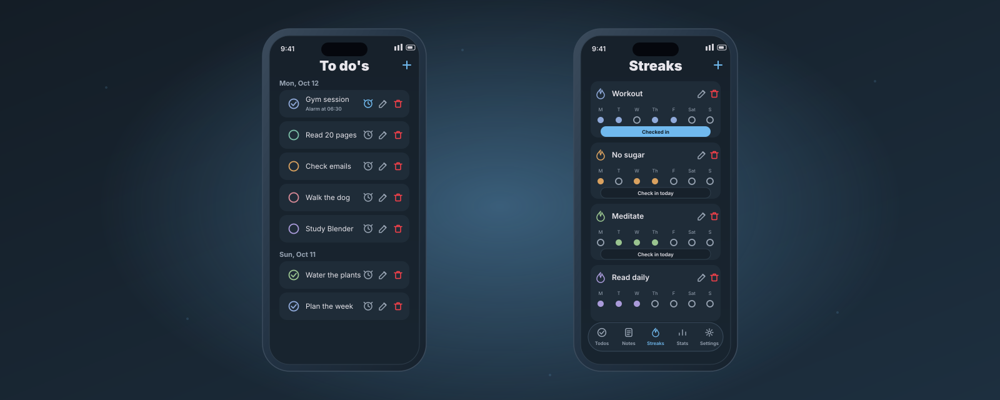

Project case study
Tendo
A calm, local-first tracker for todos, habits, streaks and notes, built with React Native and Expo Router. It pairs a soft, glassy interface with real system alarm reminders - all without the noise of cloud sync or account management - plus statistics that make consistency visible.

Overview
Tendo answers one question well: did I keep up today? It combines a todo list, habit streaks and quick notes in one quiet, dark-friendly app, then rewards consistency with a stats screen. Everything is stored on device - no account, no sync, no noise.
Key features
- Todos grouped by day, with edit, delete and undo
- Per-todo alarms with snooze (10 min / 1 hour) and dismiss
- Habit streaks with a weekly check-in grid
- Notes with word and character tracking
- Statistics: completion ring, week-over-week, 10-week heatmap
- Six accent themes, light / dark / system
Tech stack
Expo SDK 57 / React Native 0.86 with TypeScript. File-based routes with Expo Router, AsyncStorage for persistence, Expo Notifications with custom alarm sounds, and Expo Haptics for tactile feedback. Streak maths is covered by Jest unit tests.
Architecture
Screens live in src/app/(tabs) (Todos, Notes,
Streaks, Stats, Settings). Pure logic sits in
src/lib — dates, streak calculations, storage,
reminders and settings — and the entire look is generated from a
single themed style factory in src/styles.
Reminder reliability
Alarms are the tricky part of a habit app. Tendo schedules real system notifications with custom chime and alarm sounds, but also keeps an in-app fallback that fires while the app is open (for Expo Go and web). A response listener handles snooze and dismiss taps straight from the notification.
Design system
Rather than hard-coded colours, the theme is derived: picking an accent tints the backgrounds, surfaces and borders toward that hue while text stays neutral. One function produces the whole palette, so six accents work in both light and dark without extra assets.
Challenges & learnings
Streak logic is easy to get subtly wrong, so current and longest streaks were written as pure, tested functions — including the rule that today's unfinished streak doesn't break yesterday's run. Balancing system notifications against in-app alerts without double-firing taught careful state design.
Status & deliverables
Shipped as v1.0.0 (com.kamarack.tendo) with an
Android build produced through EAS, alongside the source and unit
tests. Screens above are rendered from the real app theme. Source
and the build are available on request.